Load labels and symbols
Using load handles and labels
Each load is represented in the graphics window by two types of labels. One is a handle that you can use to modify the load. The other is an optional load value label, which you can turn on and off.
-
The edit definition handle looks like an annotation: it displays the load name and is attached to the entity by a leader line. You can click the edit definition handle to edit the load itself.
 Note:
Note:You can use the options on the PMI tab→Dimension group to change the text size of an edit definition handle to make it easier to read.
To learn more, see Change PMI text size.
-
You can use the Value Label button
 on the Loads command bar to display labels that identify the load value and units
for all load types.
on the Loads command bar to display labels that identify the load value and units
for all load types.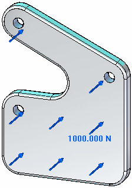
A negative value indicates the load direction is flipped.
Modifying load symbol direction
Load symbols are displayed on the geometry where the load is defined. Most load symbols consist of a directional arrow. The tip of the arrow points in the direction in which the load is applied.
-
You can change the direction of the force symbols—and the direction in which the force is applied—using the Flip Direction button on the Loads command bar
 or by pressing the F key on the keyboard.
or by pressing the F key on the keyboard.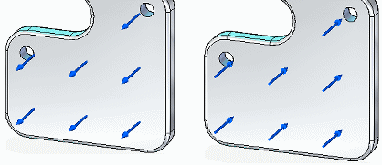
Load type symbols
Each load type is identified in the graphics window by a special symbol. In most cases, this is an arrow that varies in thickness and length with the type of load.
|
Load type |
Load Symbol |
|
Force |
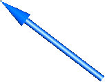 |
|
Pressure |
|
|
Torque |
|
|
Gravity |
|
|
Displacement |
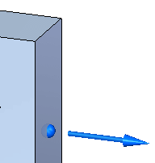 Note:
The displacement load is represented by a two-piece symbol. The ball is located on the face where the load is defined. The arrow shows the displacement direction. |
|
Body Temperature (Body Loads) Temperature (Thermal Loads) |
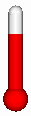 |
|
Centrifugal |
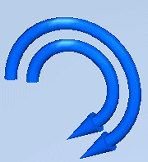
Note:
The centrifugal load is represented by two direction-of-rotation symbols on the model. You can set these independently to clockwise, counterclockwise, on, or off. |
|
Bearing |
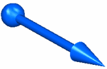 |
|
Moment (Beam mesh only) |
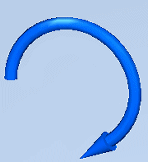 |
|
Heat Flux |
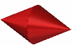 |
|
Heat Generation |
|
|
Radiation |
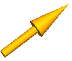 |
|
Convection |
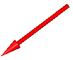 |
Load symbol and label size
You can change the size and spacing of load symbols using the Graphic Symbol Size
dialog box. You can open this dialog box using the Graphic Symbol Size button  on the Loads command bar.
on the Loads command bar.
To learn how: Modify symbol size and spacing.
Load symbol and label color
-
The default colors for load symbols are governed by the settings on the Simulation page (Solid Edge Options dialog box).
-
The Color button
 on the Loads command bar shows the color currently assigned to a selected load symbol.
You can change the color in the Color dialog box. This color palette changes the color
for both load symbols and value labels.
on the Loads command bar shows the color currently assigned to a selected load symbol.
You can change the color in the Color dialog box. This color palette changes the color
for both load symbols and value labels.To learn how: Modify symbol color.
How do I
Define a loadActivity: Apply a bearing load
Activity: Apply a centrifugal load
Activity: Apply a torque load
Activity: Apply a body temperature load
Learn more
Creating and using loadsStructural and body loads
Thermal loads
External loads (imported loads)
Loads directional steering wheel
Look up more details
Loads command barThermal Load Options dialog box
Radiation Load Options dialog box
Color dialog box
Graphic Symbol Size dialog box